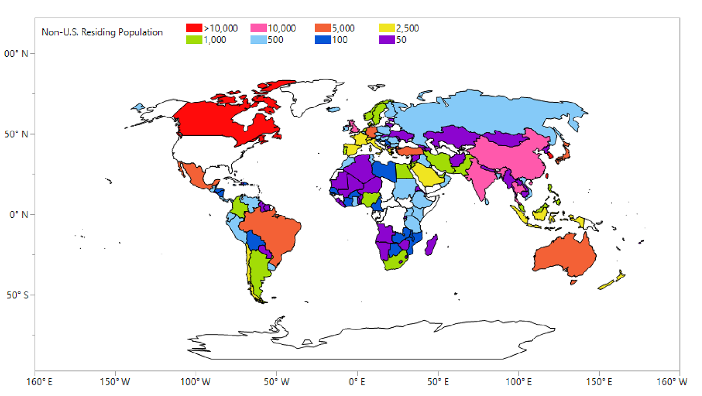
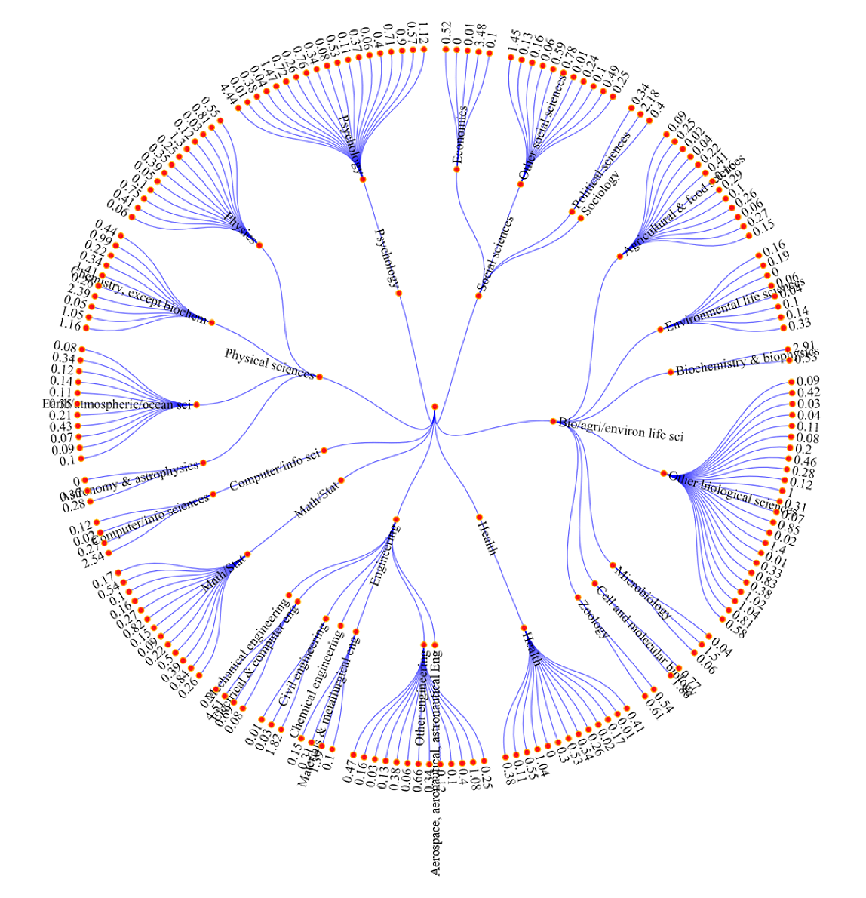

The Survey of Doctorate Recipients (SDR) is sponsored by the National Center for Science and Engineering Statistics (NCSES) within the National Science Foundation, and the National Institutes of Health (NIH). The SDR represents doctorate-degree holders who are working, retired, seeking work, or in some other situation. This study provides the only data on the education and training, work experience, and career development of the doctorate population. Your participation is greatly appreciated.
About the Survey
Your participation allows NSCES to use the SDR data to prepare two Congressionally mandated reports: Women, Minorities, and Persons with Disabilities in Science and Engineering and Science & Engineering Indicators. More generally, your response to the SDR allows government agencies and academia to use these data for planning decisions regarding education. It is also used by employers to understand and predict employment, industry, and salary trends.
-
127,800 Internationally Residing U.S. Trained SEH Doctorates
This is a description of the data vizualization consectetuer adipiscing elit, sed diam nonummy nibh euismod tincidunt ut laoreet dolore magna aliquam erat volutpat.
-
Doctoral Scientists and Engineers in Academia - Trends in Academic Employment PostDoc Positions

This is a description of the data vizualization consectetuer adipiscing elit, sed diam nonummy nibh euismod tincidunt ut laoreet dolore magna aliquam erat volutpat.
-
Trees of SDR Fields
This is a description of the data vizualization consectetuer adipiscing elit, sed diam nonummy nibh euismod tincidunt ut laoreet dolore magna aliquam erat volutpat.
FAQs
Read More
Contact Us
-
If you have a question about the survey, contact Westat:
-
To speak directly with someone at NCSES at the National Science Foundation, contact:
Daniel Foley, Project Officer
Human Resources Statistics Program
National Center for Science and Engineering Statistics
National Science Foundation -
To comment on the time you spent on the survey, contact:
-
You can also comment by writing to:
Office of Management and Budget
Paperwork Reduction Project
(OMB Number ####-####, Expiration date MM/DD/YYYY)
Washington, DC 20503